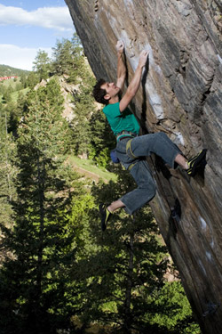

|
e-Grips Routesetting Interview: Mike Moelter 
How long have you been setting and climbing? "I have been climbing for about 14yrs and setting for around 10yrs." How did you learn? "I self-taught my way through it in the beginning at the Gravity Gym in Chicago were I grew up. After high school I moved to Boulder, Co. and worked at the Boulder Rock Club (with Jimmy Redo). Grant it he gave me a few noogies first but Jimmy Redo took me under his arm and taught me the art." What do you most enjoy about setting? "Just being a part of an event and watching it all come together. When I began there wasn’t much info structure. Now we have things like head judges and appeals committees." What makes a "good" routesetter? "At first it was really hard to not feel like the entire world would stop spinning if I F’d up the setting at a comp. Now I feel little of that if any and it has allowed me to be more effective on a whole." What do you think makes YOU a "good" routesetter? What would your friends say? "Same answer as above. My co-workers would say that I talk a lot of shit, which is true but we usually get the job done right." Where have you, or do you, set? "Commercially: Boulder Rock Club. For competitions: The Spot, Cats, Climb Nashville, The Circuit, Planet Rock, 3 of the Touchstone Gyms, Earth Treks, and many more." What are favorite events you’ve been a part of? "The First PCA was probably the craziest that I am going to experience in my life. All I can say is that the urban legends about the PCA that are out there are not only true but also half the story. The current USA Climbing SCS Junior National has to be the most involved event going on. All the parts needed to make that event happen are pretty impressive." Do you have any favorite moves or problems that you’ve set? "I was into the La Rose moves for a while but girls just kept mono matching them so I gave up. Lately I have been into volumes." What is your favorite e-Grips set? "The Midnight Crimp Set" Favorite Unique Feature? "Da Buddha. I took one around the country with me a few years back to all of the ABS Regionals. I had the gym head setter use it in our finals and when the comp was over had them date and sign the back. It is something I will hang onto for a long time." Finally, how would you describe what makes e-Grips handholds the best? "Most of the line is so adaptable you will be reaching for them more than anything else out there. Meaning a lot of holds are only good for certain angles of walls and specific surface area. With e-Grips the holds have been shaped in a way that they work in any gym on any surface on any given angle. Try them out you’ll see what I mean." |